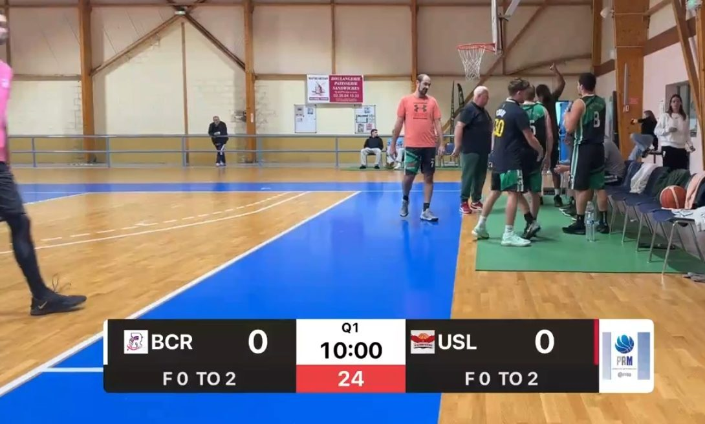

1 min 20
U21 Région · BCR 71 - 70 Oissel
Une victoire d'un tout petit point.
Vidéos du BCR
Le club diffuse ses matchs en direct sur sa page Facebook, avec le score à l'écran. Ici, on retrouve le prochain direct, les résumés de chaque match et, pour les licenciés, les matchs en entier.

Direct · Pré-régionale masculine, BCR contre US LillebonneLes résumés
Une victoire d'un tout petit point.
Les meilleures actions du match.
Le début de saison invaincu, en images.
Réservé aux licenciés
Dans l'espace licenciés, chaque famille retrouve les matchs complets de l'équipe de son enfant, classés par date. Pratique pour les grands-parents qui n'ont pas pu venir, et pour les coachs qui préparent le match suivant.
Voir l'espace licenciés